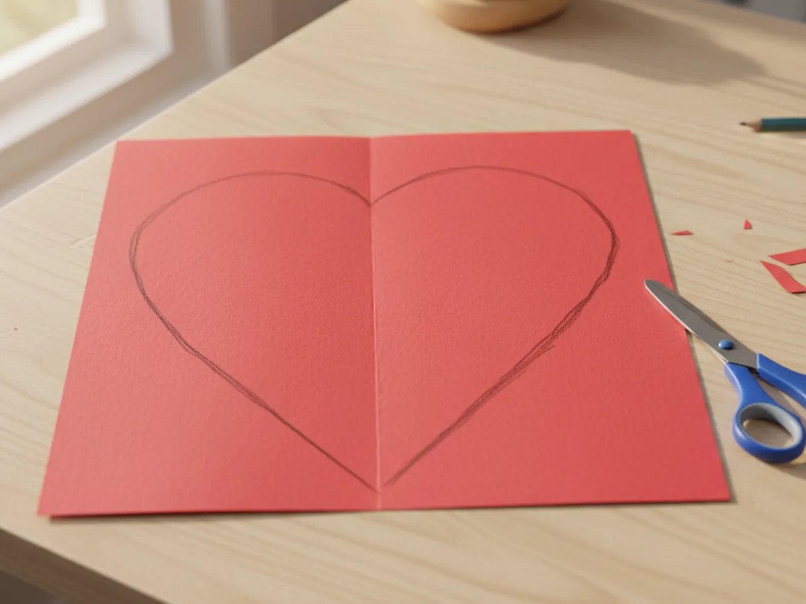
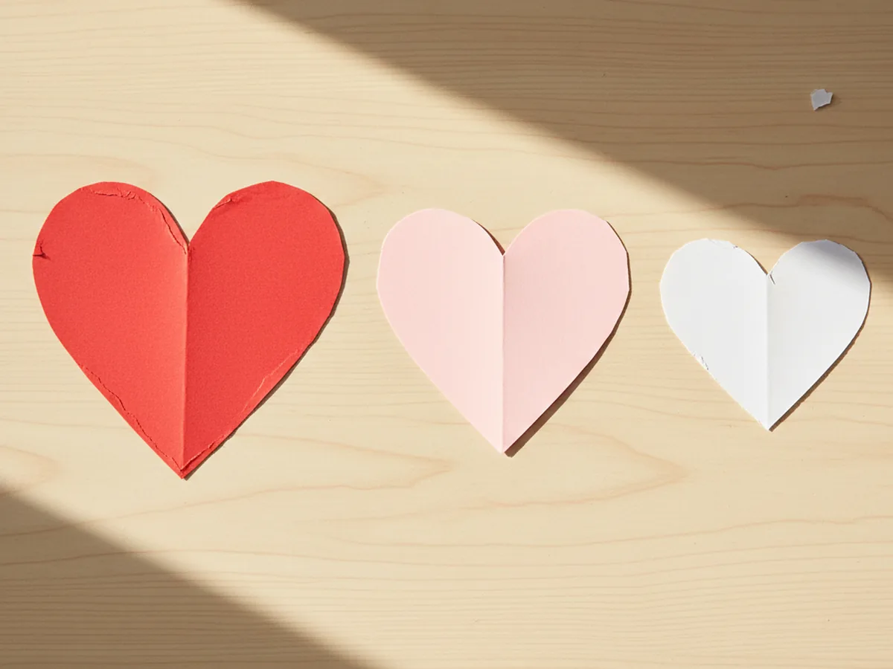
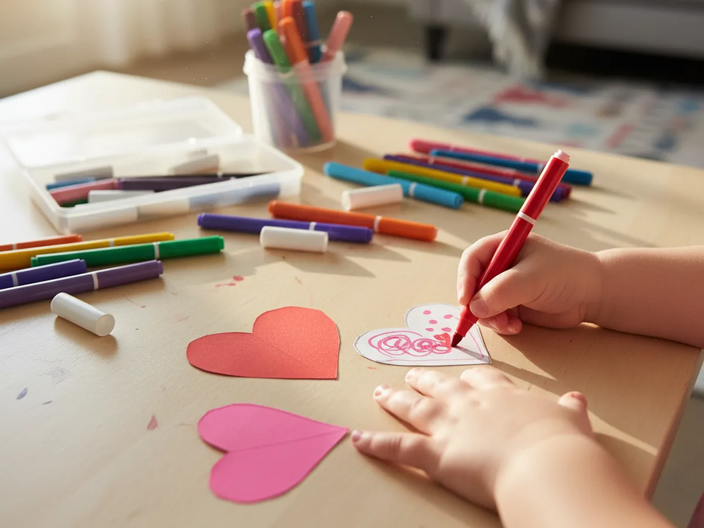
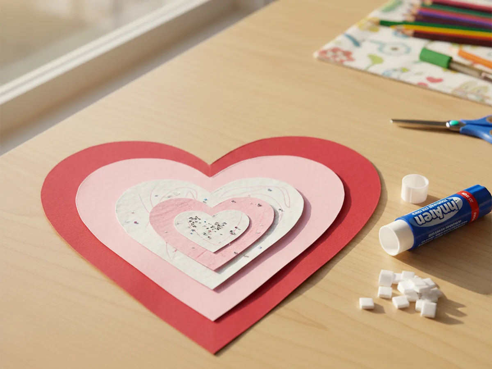
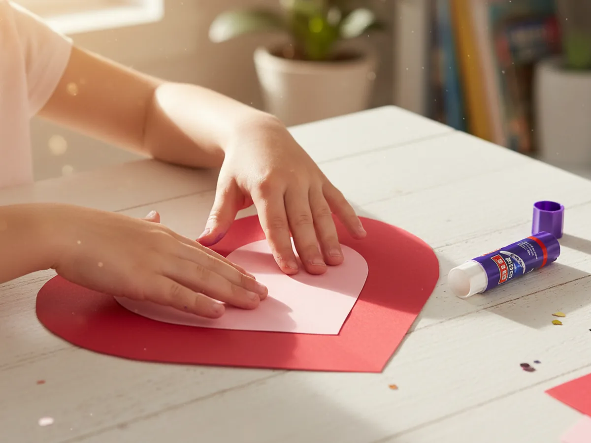
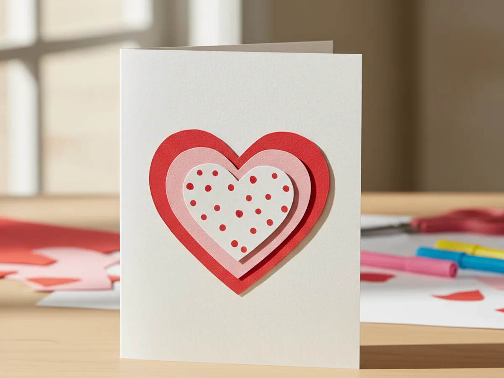

Few shapes carry as much warmth as a heart, and this heart shape paper craft turns that simple shape into something your child will be genuinely proud to display. ❤️ You stack three hearts in different sizes and colors, layer them from largest to smallest, and end up with a beautiful piece of art that looks polished and sweet without requiring any special skills. It takes about 30 minutes from start to finish, uses only paper and glue, and creates almost no mess at all.
Whether you make it as a gift for a grandparent, a wall decoration for a child's bedroom, or just a fun Tuesday afternoon project, this layered heart shape paper craft always delivers a result worth keeping. The folding trick in the first step makes perfectly symmetrical hearts every single time, so even the youngest crafters end up with something that looks intentional and beautiful.
Why Kids Love This Craft
Hearts are one of the first shapes children learn to recognize and associate with love, so there is already an emotional warmth built into this craft before you even begin. When kids cut out their first folded heart and open it up to see the symmetrical shape, it feels like magic. That little reveal moment is one of the most satisfying parts of any paper craft. 🎨
Folding the paper and drawing the half-heart curve is wonderful practice for pencil control and hand strength, two skills that come up again and again in early childhood. Cutting along a curved line is also a gentle challenge for fine motor development, and the soft round edges of a heart are much more forgiving than sharp corners. Children who feel nervous about cutting can build real confidence here because the result is so clearly recognizable and rewarding even if the cut is slightly uneven.
Choosing the colors, decorating the layers with markers, and deciding how to arrange everything gives children real creative ownership over the finished piece. This is not a craft where they are just following instructions. They are making real creative choices, and the final result reflects those choices in a way they can point to and say, "I made that." That feeling of pride is exactly why this paper heart craft for kids is worth doing again and again.
What You'll Need
Here is everything you need to make this heart shape paper craft at home. Set it all out before you start so the activity flows smoothly.
- Colored Cardstock (100 sheets, assorted pink and red shades), the sturdier the paper, the better the layered heart holds its shape.
- White copy paper or white cardstock, for the smallest and topmost heart layer.
- Elmer's Disappearing Purple Glue Sticks (30-pack), washable, easy for small hands, and dries clear in seconds.
- Fiskars 5-Inch Blunt-Tip Scissors for Kids, the blunt tip keeps things safe and the sharp blade cuts cardstock cleanly.
- Foam Adhesive Squares (8 sheets, 3D pop mount), optional but wonderful for adding a raised dimensional effect between layers.
- Washable markers or crayons, for decorating the hearts before layering.
- A pencil, for tracing the half-heart shape before cutting.
Step-by-Step Instructions
Follow these steps at whatever pace feels right for your child. There is no rush, and every stage of this heart shape paper craft is easy to pause and come back to.
Step 1: Fold and Trace Your Heart Shapes
Start with three different sheets of paper. Choose a large sheet in red, a medium sheet in pink, and a small piece of white paper or white cardstock. Fold each sheet in half vertically so the left and right sides line up evenly. Hold the fold firmly and use a pencil to draw one half of a heart shape along the fold line, starting at the top center, curving out and down, then coming to a point at the bottom. The half-heart should fill about two thirds of the paper to leave enough room for a good visible border when the layers stack. Cut along the pencil line through both layers at once. When you unfold the paper, you have a perfectly symmetrical heart shape every time.
The size difference between the three hearts matters. The red heart should be the largest, the pink one clearly smaller, and the white one smaller still so that when they are stacked, you can see a clear border of each color around the edge.

Step 2: Cut Out All Three Hearts
Once the half-heart is drawn on each folded sheet, have your child cut along the pencil line. Encourage them to keep the paper flat on the table and guide it slowly as they cut, rather than trying to cut quickly. Curved lines are harder than straight ones, so it helps to take small, steady snips. When all three hearts are cut and unfolded, lay them out side by side on the table so you can see the size difference between the red, pink, and white hearts before moving on.
This is also a nice moment to compare them together and let your child feel proud of how the shapes turned out. Even if the edges are a little uneven, the layered assembly in the next steps will hide most imperfections beautifully.

Step 3: Decorate the Hearts
Before stacking the layers, give your child a chance to decorate each heart with washable markers. Decorating before assembling is much easier because the paper lies flat and your child can color right up to the edges without worrying about reaching around the other layers. Simple ideas that work beautifully include small dots scattered across the white heart, a wavy border line around the pink heart, or a few scribbled swirls on the red one.
Some children want to fill every inch with color and that is completely wonderful. Others prefer to leave most of the paper plain and add just one small design in the center. Both approaches result in a gorgeous finished heart shape paper craft, so follow your child's lead entirely here.

Step 4: Arrange the Layers
Once the decoration is done, stack the hearts from largest to smallest with the red heart on the bottom, the pink heart on top, and the white heart on top of that. Center each layer carefully so that equal borders of the colors below are visible around the edges. Lay the stack flat on the table and take a moment to adjust the alignment until it looks balanced. The equal borders of red and pink peeking out around each layer are what give this paper heart craft its beautiful, professional-looking result.

Step 5: Glue the Layers Together
Now it is time to attach the layers. Lift the pink heart off the red one and apply several dots of glue stick to the center of the red heart's top surface. Press the pink heart back down firmly and hold it in place for about ten seconds. Then apply glue to the center of the pink heart and press the white heart on top. Press down and hold again. The glue stick dries quickly and creates a clean, flat bond.
For a fun raised effect, swap the glue stick for foam adhesive squares between the layers. Peel and stick a few foam squares to the center of the red heart, press the pink one down, then do the same for the white layer. The foam lifts each layer slightly so the finished heart looks three-dimensional and eye-catching.

Step 6: Mount and Display Your Heart
The last step is deciding how to show off the finished craft. The easiest option is to fold a sheet of cardstock in half to make a greeting card and glue the layered heart to the front. It makes a gorgeous handmade gift for a grandparent, a parent, or anyone who would love receiving something homemade from a child. Alternatively, mount the heart on a slightly larger piece of colored paper and tape it to the wall, a bedroom door, or the refrigerator. If you want to hang it, punch a small hole near the top of the red heart and thread a piece of ribbon through to make a simple loop. 🌟

Variations to Try
Rainbow Heart Layers: Instead of red, pink, and white, try using five or six hearts in the colors of a rainbow, starting with a large red or orange heart at the base and working inward through yellow, green, blue, and purple. Each layer gets slightly smaller and a new color shows at the edge. The rainbow version works beautifully as a spring or summer decoration.
Torn Paper Heart: Instead of cutting, let younger toddlers tear each heart shape from the paper using their hands. Tearing gives a softer, naturally uneven edge that looks gorgeous when the layers are stacked. This works well with tissue paper or crepe paper for an especially soft, textured look.
Message Heart Card: Before stacking the layers, use a marker to write a short message on each heart so the words are hidden between the layers. Give the finished card to someone special and let them pull apart the layers to discover the hidden notes. It is a sweet, memorable way to turn this heart shape paper craft into a truly personal gift.
Final Thoughts
This heart shape paper craft is one of those genuinely satisfying projects where the result always looks better than you expect for the amount of effort involved. It is low-mess, low-stress, and uses nothing but paper and glue. Most importantly, it gives you and your child a real creative moment together and ends with something beautiful to display or give away. Few things feel warmer than a handmade heart made by little hands. 💛
If your child loves making hearts, try working through a whole rainbow of colors together or making a whole set of heart cards for different family members. Each one will be a little different, and each one will be just as special.
More Crafts You'll Love
If this heart project was a hit, these other paper crafts are just as easy and just as sweet: